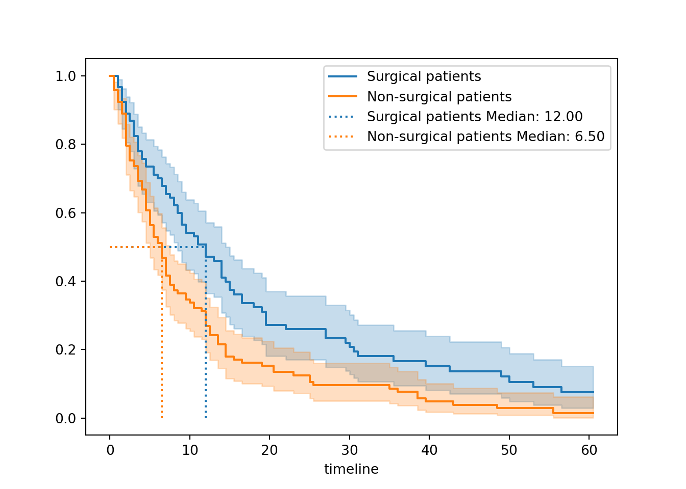
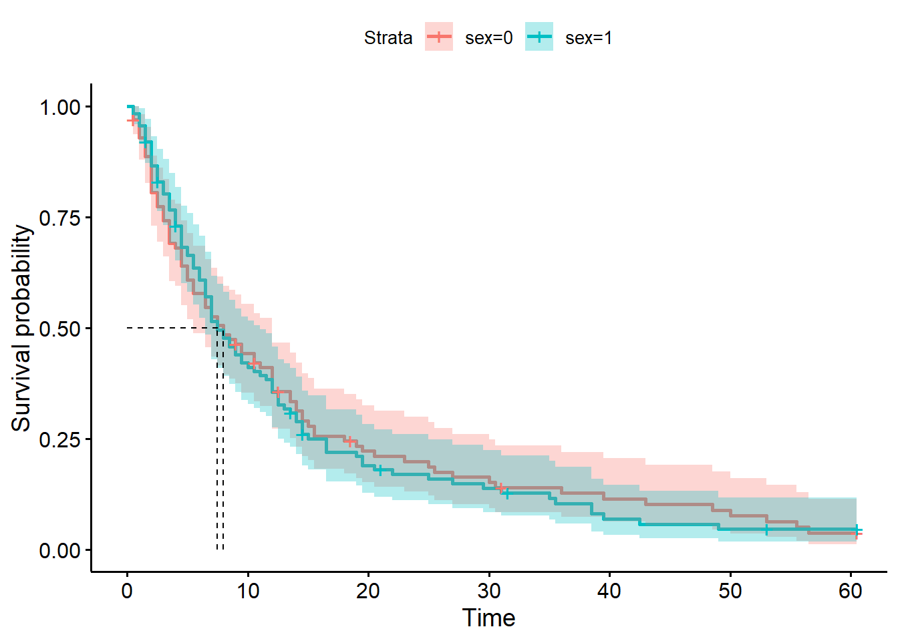
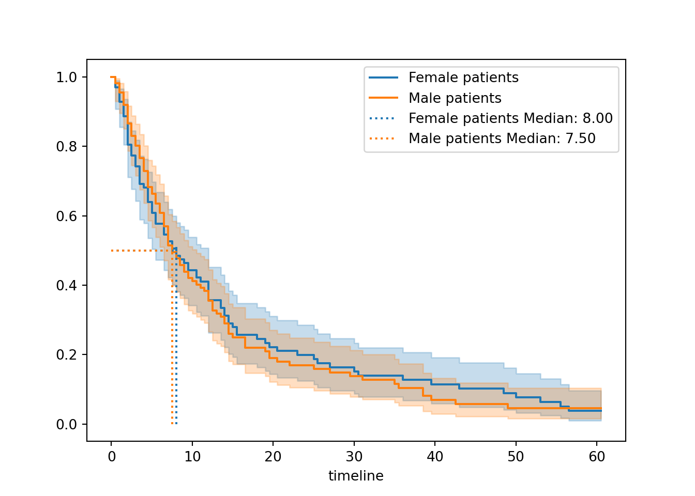
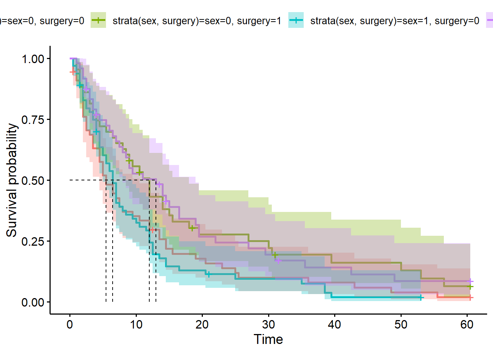
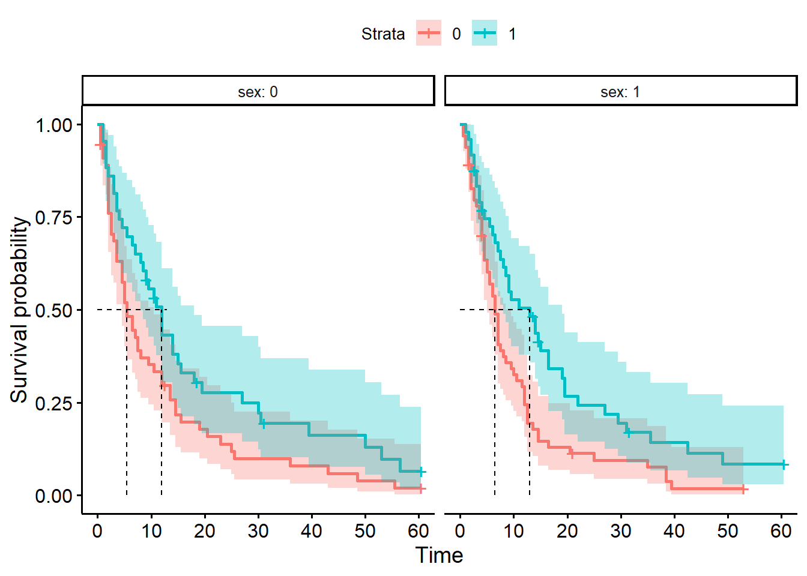
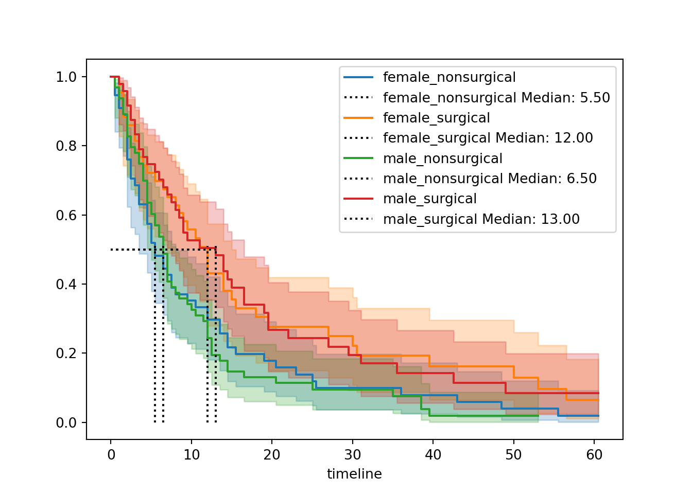

# load the required packages for fitting & visualising
library(tidyverse)
library(survival)
library(survminer)4 Kaplan-Meier survival curves
The most common way to present or visualise time-to-event data is using survival curves, fitted with the Kaplan-Meier estimator.
In this chapter, we’ll look at how to produce those curves, and some best practices for presenting them in papers or reports.
4.1 Libraries and functions
NoteClick to expand
import numpy as np
import pandas as pd
from lifelines import *
import matplotlib.pyplot as pltAs our worked example in this chapter, we’ll use a dataset called hospital_stays.
hospital_stays <- read_csv("data/hospital_stays.csv")Rows: 210 Columns: 7
── Column specification ────────────────────────────────────────────────────────
Delimiter: ","
chr (1): hospital_type
dbl (6): time, discharged, age, sex, surgery, weekend_admission
ℹ Use `spec()` to retrieve the full column specification for this data.
ℹ Specify the column types or set `show_col_types = FALSE` to quiet this message.head(hospital_stays)# A tibble: 6 × 7
time discharged age sex surgery weekend_admission hospital_type
<dbl> <dbl> <dbl> <dbl> <dbl> <dbl> <chr>
1 10.5 1 43 1 0 1 public
2 5 1 48 1 0 0 public
3 3 1 77 1 0 1 public
4 4.5 1 50 1 0 0 public
5 60.5 0 79 0 1 1 public
6 9 1 73 0 1 1 public hospital_stays = pd.read_csv("data/hospital_stays.csv")
hospital_stays.head() time discharged age sex surgery weekend_admission hospital_type
0 10.5 1 43 1 0 1 public
1 5.0 1 48 1 0 0 public
2 3.0 1 77 1 0 1 public
3 4.5 1 50 1 0 0 public
4 60.5 0 79 0 1 1 publicIn this clinical study, patients were tracked for up to 30 days following hospital admission, to record whether or not they were discharged (and if so, which day following admission).
For each patient, the researcher recorded age, sex, whether they had surgery during their stay, and whether they had a weekend_admission (versus a weekday), to assess whether any of these factors have an impact on how quickly they were discharged.
For the purposes of this chapter, we’re going to focus just on the sex and surgery categorical predictors.
4.2 Producing a single survival curve
Let’s start by visualising our hospital_stays data with a single survival curve.
The first step in this process is to create the survival table, as you saw in the lecture materials.
In R, we use the survfit function to create the survival object.
You will hopefully recognise the syntax - it looks very familiar to how we would write the formula of a linear model, in the y ~ x format. (We’re not interested in any of our grouping variables just yet, so we’re just putting in 1 to look at the whole dataset.)
hosp_curve <- survfit(Surv(time, discharged) ~ 1, data = hospital_stays)Incidentally, we could do this in two steps if we wanted - the following code would achieve the same thing:
surv_object <- Surv(time, discharged)
hosp_curve <- survfit(surv_object ~ 1, data = hospital_stays)In the lifelines package, we first need to initialise our KaplanMeierFitter with some sensible name.
Then, we identify the relevant columns in our dataset that contain the observed times and a record of whether or not the event (in this case, discharge) occurred.
hosp = KaplanMeierFitter()
T = hospital_stays["time"]
E = hospital_stays["discharged"]
hosp.fit(T, event_observed=E)<lifelines.KaplanMeierFitter:"KM_estimate", fitted with 210 total observations, 21 right-censored observations>Let’s look in more detail at the object(s) we just created using our Kaplan-Meier estimation method.
Our raw data have been reorganised into a new table which has a unique row per time point, instead of a unique row per patient.
We can view this using the summary function:
summary(hosp_curve)Per time point, we can see the raw numbers of patients who experienced the event, were censored and/or were at risk, plus the Kaplan-Meier-estimated survival probability
In lifelines, the relevant information is stored in two different objects.
The event_table gives us the raw numbers at each time point, and the survival_function_ contains the Kaplan-Meier-estimated survival probability.
hosp.event_table removed observed censored entrance at_risk
event_at
0.0 0 0 0 210 210
0.5 6 5 1 0 210
1.0 7 7 0 0 204
1.5 9 8 1 0 197
2.0 14 14 0 0 188
... ... ... ... ... ...
50.0 1 1 0 0 11
53.0 2 1 1 0 10
55.5 1 1 0 0 8
56.5 1 1 0 0 7
60.5 6 0 6 0 6
[63 rows x 5 columns]hosp.survival_function_ KM_estimate
timeline
0.0 1.000000
0.5 0.976190
1.0 0.942694
1.5 0.904412
2.0 0.837062
... ...
50.0 0.060601
53.0 0.054541
55.5 0.047723
56.5 0.040906
60.5 0.040906
[63 rows x 1 columns]Now that we’ve done the Kaplan-Meier estimation step, it’s time to plot the survival probabilities against time, to produce the classic survival curve.
In the survival package, there is a purpose-built function for doing this, called ggsurvplot.
ggsurvplot(hosp_curve)
You can change different aspects of the plot’s appearance with the various arguments of the function.
- The
colourandpalettearguments let you control the colour(s) - You can edit the axis labels with
ylabandxlab - Confidence intervals can (and should!) be explicitly added with the
conf.intargument
ggsurvplot(hosp_curve,
colour="black",
palette="#EA7125",
ylab="Probability of remaining in hospital",
conf.int=TRUE)
In the lifelines package, there’s a dedicated function for this called plot_survival_function.
plt.clf()
hosp.plot_survival_function()
plt.show()
By default, this will show nothing except the curve with confidence intervals.
However, you can customise your plot by:
- Adding markers for censored observations (and changing what those markers look like)
- Changing the colour and line style for the survival curve
- Editing the x and y axis labels, and adding a title
You can also explicitly set the ci_show argument to True (though this is the default behaviour).
plt.clf()
hosp.plot_survival_function(
ci_show=True,
color = 'gray',
linestyle = '--',
linewidth = 2,
show_censors=True,
censor_styles={"marker": "x", "ms": 8, "mec": "#EA7125"}
)
plt.title("Hospital stays survival curve")
plt.xlabel("Time (days)")
plt.ylabel("Probability of remaining in hospital")
plt.show()
And there you are! A survival curve for the hospital_stays dataset.
There’s still more work to be done, however.
The next few sections will show you how to make the curve more sophisticated, and how to interpret the curve.
4.2.1 Median survival rate
One of the things to focus on when interpreting a survival curve is the median survival rate (sometimes referred to as the “half-life”).
This is the value of time on the x-axis when the “survival” probability on the y-axis hits 50%.
It’s good practice to include this on your survival curve.
In ggsurvplot, there is an argument called surv.median.line for adding the median.
You can set it to h, v or hv (for vertical, horizontal or both).
ggsurvplot(hosp_curve,
colour = "black",
palette = "#EA7125",
ylab = "Probability of remaining in hospital",
conf.int = TRUE,
surv.median.line = "hv")
If we want to figure out what that median value is, we can find it directly in our hosp_curve object:
hosp_curveCall: survfit(formula = Surv(time, discharged) ~ 1, data = hospital_stays)
n events median 0.95LCL 0.95UCL
[1,] 210 189 8 6.5 10.5There is, unfortunately, no inbuilt function in lifelines for adding median survival times to the plot.
You could do this manually, but I have taken the liberty of writing a helper function called add_median_markers that adds this functionality. You’ll need to run the function code before you can use it.
Noteadd_median_markers helper function
def add_median_markers(fitters, ax=None, short_lines=True, colors=None):
"""
Add median survival markers to a survival plot.
Parameters:
- fitters: A single fitter or a list of fitted lifelines KaplanMeierFitter models.
- ax: Optional matplotlib Axes to draw into.
- short_lines: If True, draw short lines. If False, draw full-width/height lines.
- colors: Optional list of colors for the markers (must match number of fitters).
"""
if not isinstance(fitters, list):
fitters = [fitters]
if ax is None:
ax = plt.gca()
if colors is None:
# Cycle through default matplotlib colors
colors = plt.rcParams['axes.prop_cycle'].by_key()['color']
for i, kmf in enumerate(fitters):
median = kmf.median_survival_time_
color = colors[i % len(colors)]
label = getattr(kmf, 'label', f'Group {i + 1}')
if short_lines:
# Short vertical and horizontal lines
ax.plot([median, median], [0, 0.51], linestyle=':', color=color, label=f'{label} Median: {median:.2f}')
ax.plot([0, median], [0.5, 0.5], linestyle=':', color=color)
else:
# Full lines across the plot
ax.axvline(median, linestyle='--', color=color, label=f'{label} Median: {median:.2f}')
ax.axhline(0.5, linestyle=':', color=color)
ax.legend()plt.clf()
hosp.plot_survival_function(show_censors=True)
add_median_markers(hosp, colors = "red")
plt.show()
The helper function is set up so that the median value is listed directly in the figure legend, but it’s also stored in our hosp object and we can access it like this:
print(hosp.median_survival_time_)8.0We can see that the median survival time for our hospital_stays dataset is 9.5.
TipInterpreting median survival time
The median survival time represents the time point at which we can expect 50% of individuals to have experienced the event (and 50% not to have experienced it).
It is essentially a descriptive statistic for our survival curve.
When we have more than one curve (later in this chapter),/pre we can use the median survival as a point of comparison. With just one curve, it still provides us with a general expectation of how long patients can expect to spend in hospital.
We use the median, rather than the mean, because the median is less affected by skewed data and outliers (which are both common in time-to-event data).
In this dataset, that means that we expect (on average) that 50% of people will be discharged within the first 9.5 days of being admitted to hospital.
4.2.2 Adding risk table
The median survival time by itself isn’t always super informative, because a) by definition it only refers to one point in the curve, and b) it doesn’t give any indication of sample size.
We can make our survival curve more informative by including risk or cumulative event tables underneath.
This is especially important if you plan to present or share your survival curve.
ggsurvplot(hosp_curve,
colour = "black",
palette = "#EA7125",
ylab = "Probability of remaining in hospital",
conf.int = TRUE,
surv.median.line = "hv",
risk.table = TRUE)
from lifelines.plotting import add_at_risk_counts
plt.clf()
fig, ax = plt.subplots()
hosp.plot_survival_function(ax=ax, show_censors=True)
add_median_markers(hosp, ax=ax, colors = "red")
add_at_risk_counts(hosp, ax=ax, fig=fig)
plt.subplots_adjust(bottom=0.3)
plt.show()

4.2.3 Adding cumulative events table
This is an alternative (or addition) to the risk table, albeit less common.
In ggsurvplot, you can show either or both:
ggsurvplot(hosp_curve,
colour = "black",
palette = "#EA7125",
ylab = "Probability of remaining in hospital",
conf.int = TRUE,
surv.median.line = "hv",
risk.table = TRUE,
cumevents = TRUE)
The lifelines package unfortunately doesn’t have a function for adding a cumulative events table, and it’s a bit of a pain to do it manually. (Though if you’re handy with matplotlib etc., you’re most welcome to try!)
As an intermediate measure, you can at least extract the cumulative events table to look at/present separately:
cumulative_events = hosp.event_table['observed'].cumsum()
print(cumulative_events)event_at
0.0 0
0.5 5
1.0 12
1.5 20
2.0 34
...
50.0 186
53.0 187
55.5 188
56.5 189
60.5 189
Name: observed, Length: 63, dtype: int644.3 Stratified survival curves
Now that we know how to plot a single survival curve, let’s explore stratified curves - where we split the data up according to categorical/grouping variables.
We’ll focus on two of the categorical variables from hospital_stays: surgery and sex.
4.3.1 Stratify by surgery
“Stratify” just means split according to category.
Our surgery variable is binary: each patient either received surgery, or did not. We want to know whether those two subgroups have different curves.
We barely have to change the code in R to achieve this. We just have to specify that the survival is being predicted by sex in our survfit formula:
hosp_curve_surgery <- survfit(Surv(time, discharged) ~ surgery,
data = hospital_stays)
ggsurvplot(hosp_curve_surgery,
conf.int = TRUE,
surv.median.line = "hv")Warning in geom_segment(aes(x = 0, y = max(y2), xend = max(x1), yend = max(y2)), : All aesthetics have length 1, but the data has 2 rows.
ℹ Please consider using `annotate()` or provide this layer with data containing
a single row.
All aesthetics have length 1, but the data has 2 rows.
ℹ Please consider using `annotate()` or provide this layer with data containing
a single row.
The stratification will automatically be extended to our risk or cumulative events tables, too, if we add those to our plot.
ggsurvplot(hosp_curve_surgery,
conf.int = TRUE,
surv.median.line = "hv",
risk.table = TRUE,
cumevents = TRUE)Warning in geom_segment(aes(x = 0, y = max(y2), xend = max(x1), yend = max(y2)), : All aesthetics have length 1, but the data has 2 rows.
ℹ Please consider using `annotate()` or provide this layer with data containing
a single row.
All aesthetics have length 1, but the data has 2 rows.
ℹ Please consider using `annotate()` or provide this layer with data containing
a single row.
All aesthetics have length 1, but the data has 2 rows.
ℹ Please consider using `annotate()` or provide this layer with data containing
a single row.
All aesthetics have length 1, but the data has 2 rows.
ℹ Please consider using `annotate()` or provide this layer with data containing
a single row.
This first portion is a copy of the code we did above, when we created a single non-stratified curve. You may not need to run this again.
T = hospital_stays["time"]
E = hospital_stays["discharged"]Now, we need to create two separate Kaplan Meier fitted objects for our two different groups. To achieve this, we need to subset our data by the surgery variable.
# Subset of the dataset that received surgery
surg = (hospital_stays["surgery"] == 1)
# Kaplan Meier fit for surgical data subset
surg_hosp = KaplanMeierFitter()
surg_hosp.fit(T[surg], event_observed=E[surg], label="Surgical patients")<lifelines.KaplanMeierFitter:"Surgical patients", fitted with 91 total observations, 14 right-censored observations># Kaplan Meier fit for non-surgical data subset
ns_hosp = KaplanMeierFitter()
ns_hosp.fit(T[~surg], event_observed=E[~surg], label="Non-surgical patients")<lifelines.KaplanMeierFitter:"Non-surgical patients", fitted with 119 total observations, 7 right-censored observations>Now, we can plot both of these curves on the same set of axes.
Our add_median_markers helper function can be used again here - we just have to make sure to pass both of the fit objects, as a list, as the first argument.
plt.clf()
# Initialise a plot to capture both of the curves
fig, ax = plt.subplots()
# Add the two curves, one at a time
surg_hosp.plot_survival_function(ax = ax)
ns_hosp.plot_survival_function(ax = ax)
# Add the median markers for both curves
add_median_markers([surg_hosp, ns_hosp], ax = ax)
plt.show()
So, what do we see when we compare surgical and non-surgical patients?
The two curves look very different.
The non-surgical group has a curve that drops more quickly towards the x-axis. This indicates that more events - here, that means discharges - are happening earlier for the non-surgical group.
This is borne out by our median survival values. Our non-surgical patients have a lower median survival value, suggesting that on average we expect surgical patients to stay longer in hospital before discharge.
Overall, this gives a strong impression that surgical patients stay longer in hospital, i.e., have a longer time to discharge.
Next chapter, we’ll look at quantifying this with a significance test.
4.3.2 Stratify by sex
Another categorical variable in our dataset is biological sex. Patients in this dataset were grouped as either male (1) or female (0).
Once again, there’s very little tweaking to the code required to achieve this:
hosp_curve_sex <- survfit(Surv(time, discharged) ~ sex, data = hospital_stays)
ggsurvplot(hosp_curve_sex,
conf.int = TRUE,
surv.median.line = "hv")Warning in geom_segment(aes(x = 0, y = max(y2), xend = max(x1), yend = max(y2)), : All aesthetics have length 1, but the data has 2 rows.
ℹ Please consider using `annotate()` or provide this layer with data containing
a single row.
All aesthetics have length 1, but the data has 2 rows.
ℹ Please consider using `annotate()` or provide this layer with data containing
a single row.
hosp_curve_sexCall: survfit(formula = Surv(time, discharged) ~ sex, data = hospital_stays)
n events median 0.95LCL 0.95UCL
sex=0 98 89 8.0 5.5 12
sex=1 112 100 7.5 6.5 11We use the same procedure as above, creating a separate fit for the male and female subsets of the data.
# Subset the data
female = (hospital_stays["sex"] == 0)
# Kaplan Meier fit for female patients
fem_hosp = KaplanMeierFitter()
fem_hosp.fit(T[female], event_observed=E[female], label="Female patients")<lifelines.KaplanMeierFitter:"Female patients", fitted with 98 total observations, 9 right-censored observations># Kaplan Meier fit for male patients
male_hosp = KaplanMeierFitter()
male_hosp.fit(T[~female], event_observed=E[~female], label="Male patients")<lifelines.KaplanMeierFitter:"Male patients", fitted with 112 total observations, 12 right-censored observations>Then, we plot both of these curves on the same set of axes, with median markers if desired:
plt.clf()
# Initialise a plot
fig, ax = plt.subplots()
# Add both survival curves
fem_hosp.plot_survival_function(ax = ax)
male_hosp.plot_survival_function(ax = ax)
# Add both median markers
add_median_markers([fem_hosp, male_hosp], ax = ax)
plt.show()

When stratified by sex, the curves look much more similar to each other compared to when we stratified by surgery.
The median survival times are also much more similar (9.5 versus 8.5). Female patients get discharged a little quicker on average, but not very much, and the confidence intervals for the two curves are overlapping pretty much the whole way.
Visually, this suggests that sex has much less of an impact than surgery.
Next chapter we’ll look at how to test this more formally.
4.3.3 Stratify by sex and surgery
We could stratify our plot in one of two different ways.
Firstly, we could consider our data as containing four separate subgroups.
We use the strata syntax inside our survfit function, and we will get four separate survival curves in our figure.
hosp_curve_sexsurg <- survfit(Surv(time, discharged) ~ strata(sex, surgery), data = hospital_stays)
ggsurvplot(hosp_curve_sexsurg,
conf.int = TRUE,
surv.median.line = "hv")Warning in geom_segment(aes(x = 0, y = max(y2), xend = max(x1), yend = max(y2)), : All aesthetics have length 1, but the data has 4 rows.
ℹ Please consider using `annotate()` or provide this layer with data containing
a single row.
All aesthetics have length 1, but the data has 4 rows.
ℹ Please consider using `annotate()` or provide this layer with data containing
a single row.
Alternatively, we could facet our plot. If we’re doing this, we explicitly don’t use the strata syntax, because we want each variable to be estimated separately.
We also need to add the facet.by argument into our ggsurvplot function:
hosp_curve_sexsurg <- survfit(Surv(time, discharged) ~ sex + surgery, data = hospital_stays)
ggsurvplot(hosp_curve_sexsurg,
conf.int = TRUE,
facet.by = "sex",
surv.median.line = "hv")Warning in geom_segment(aes(x = 0, y = max(y2), xend = max(x1), yend = max(y2)), : All aesthetics have length 1, but the data has 4 rows.
ℹ Please consider using `annotate()` or provide this layer with data containing
a single row.
We can produce four separate survival curves in our figure.
First, we need to create a new grouping variable (this acts a bit like an interaction term):
# Combine two binary variables into a single stratification group
hospital_stays["group"] = hospital_stays["sex"].astype(str) + "_" + hospital_stays["surgery"].astype(str)
# Optional: label the groups nicely
hospital_stays["group"] = hospital_stays["group"].map({
"0_0": "female_nonsurgical",
"0_1": "female_surgical",
"1_0": "male_nonsurgical",
"1_1": "male_surgical"}
)
hospital_stays.head() time discharged age ... weekend_admission hospital_type group
0 10.5 1 43 ... 1 public male_nonsurgical
1 5.0 1 48 ... 0 public male_nonsurgical
2 3.0 1 77 ... 1 public male_nonsurgical
3 4.5 1 50 ... 0 public male_nonsurgical
4 60.5 0 79 ... 1 public female_surgical
[5 rows x 8 columns]Then, we need to fit separate Kaplan-Meier estimates for each of our four subgroups.
For efficiency of code, I’m going to use a for loop to achieve this (without saving the fitted objects anywhere).
hosp = KaplanMeierFitter()
# Initialise a plot
fig, ax = plt.subplots()
# Loop through each subgroup, fitting & plotting the curve
for name, grouped_df in hospital_stays.groupby("group"):
hosp.fit(grouped_df["time"], event_observed=grouped_df["discharged"], label=name)
hosp.plot_survival_function(ax=ax)
add_median_markers(hosp, ax=ax, colors="k")
plt.show()
It is possible to achieve a faceted plot with some clever additions from seaborn, but the code gets quite extensive, so we’ll skip that for now.
4.4 Best practices for figures
You might be using Kaplan-Meier curves like these simply to visualise, explore and understand your own data. However, it’s very likely that you’re hoping to use curves like these to present time-to-event data in scientific writing.
If so, here are some best practices to follow, to be clear and transparent with your figure(s).
| ✓ | Always include confidence intervals |
At best, a survival curve without confidence intervals is just a bit less informative; at worst, it’s actively disingenuous. There’s no reason not to include the intervals - they are only ever helpful/informative! |
|
| ✓ | Include & report the median survival time |
| It’s a small addition to the plot (you can make it visually quite unobtrusive, by making the median lines a bit fainter), but adds quite a bit of helpful info to a viewer. | |
| ✓ | Include summary table with counts |
| This is more commonly a risk table, but you might find the cumulative events table (or both) more useful. In either case, they give context to the curve by making the sample size(s) more obvious. | |
| ✓ | Make sure the axes labels are clear |
Consider changing the y-axis label from “survival probability” to something more appropriate for your particular research question. If death is not the event of interest in your dataset, then “survival” is probably not the most helpful label. |
|
| ✓ | Show relevant p-values |
It’s common and often helpful to add the p-value to your survival curves, for readers’ ease. In subsequent chapters, we’ll look at how to calculate the p-values, and show how they can be added to the plots. |
4.5 Summary
One of the most common ways to visualise time-to-event (survival) data is via Kaplan-Meier curves. These are easily fitted using dedicated packages in R/Python.
TipKey Points
- A Kaplan-Meier survival curve plots
timeagainst the estimatedsurvival probability(calculated using the Kaplan-Meier estimator) - You can fit a Kaplan-Meier curve for the entire dataset, or stratify by one or more categorical predictors
- You should always include confidence intervals for your curves
- Other helpful features include the median survival time and risk tables/cumulative event tables